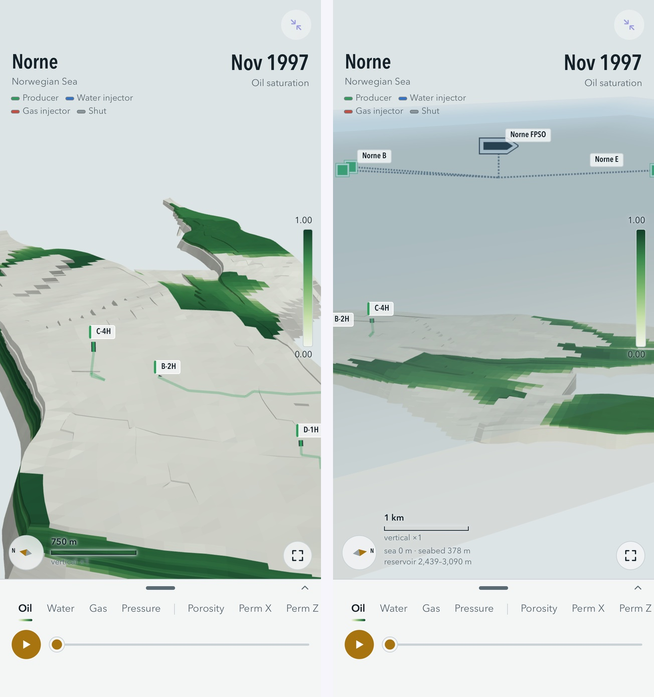

Norne: an oil field's underground and its topside, from open data
One of the example apps. Built by asking an AI; runs offline in Snuggery.
Norne is an oil field in the Norwegian Sea, and it is also the reservoir engineer's favourite open dataset: Equinor and the field's partners released the full simulation model through the Open Porous Media initiative, so anyone can run the same deck the industry runs. I wanted the whole thing on a phone — the rock, the fluids moving through nine years of production, and then the part nobody puts in a reservoir viewer, the platform and pipelines above.
The app is plain HTML, CSS and JavaScript with WebGL 2, no libraries, and it runs offline in Snuggery's sandbox. The 3D saturations and pressures come from our own run of the public deck with OPM Flow, checked against the Eclipse results OPM publishes for the same deck: at the end of the history, cumulative oil differs by 0.2 percent, water by 0.4, gas by 0.1. Against the field's observed history the model produces about 7 percent less oil and 43 percent more water — that is the model's history match, not the run, and the app says so.
What is in it
- The 44,431-cell corner-point grid, coloured by oil, water or gas saturation, pressure, porosity, permeability, net-to-gross, depth, formation, region or layer.
- The production history from November 1997 to December 2006, in 110 monthly frames, with a player.
- The 36 wells, coloured by what each is doing on that date: producing, injecting water, injecting gas, shut.
- Explode the model by formation — Garn, Ile, Tofte, Tilje — by layer or by segment; cut it by I, J and K; filter cells by value; tap a cell for its numbers.
- Charts of field or per-well oil, water and gas rates, with a cursor at the current date.
The topside, and where the record stops
Everything above the seabed is optional and off by default; with every row off the app is exactly the reservoir viewer it was before. Switch the group on and the sea surface and seabed appear at their true depths, the Norne FPSO at its published position, the seven subsea templates each on its own in-service date, the 16-inch gas export line along its published 128-kilometre route to the Åsgard Transport tee, and — the part I asked for at midnight — animated flow: marks running along the wells, the flowlines and the export line at speeds set by the simulation's own rates.
The rule for the topside was that it may draw only what the public record holds, and must say what it is doing whenever it draws less. The flowlines between the templates and the platform are straight dashed lines labelled schematic, because no in-field route is published; tracks within 500 metres of a facility are dropped from the public dataset. The legs from the wells up to their templates are schematic for the same reason. The oil leaves by shuttle tanker and no open dataset records where a cargo goes, so no line reaches any refinery, and on the export-network map a refinery is drawn as a hollow ring with a leader to its name, never as a dot on a line. The map's lengths are measured along the real route, not off the map. The field's reported production sits beside the simulated rates as dotted lines, with the note that reported gas is gas sold, zero until 2001, while the simulation's is gas produced.

How it was built
By asking, in two stages. The reservoir viewer came first, from a brief and the public deck. The topside was research before it was code: an AI agent spent an evening establishing what was actually published — positions, dates, the export route, the production figures — and what was not, and only then was a build commissioned, with the honesty rules above written into its brief. Six agents worked on it for about four hours; a review pass then went looking for anything drawn beyond the record, and the fixes went in before it was published. With every topside row off, the app was checked to be pixel-identical to the version before.
Depth is drawn true, in one scale: sea level at 0 metres, the seabed at 378, the reservoir between 2,439 and 3,090. Switching the topside on sets the vertical exaggeration to one, because at the viewer's default of five the platform would float 13.8 kilometres above a field 3.3 kilometres tall.
Sources: the Norne benchmark case, Equinor and the Norne partners through OPM (ODbL); the Norwegian Offshore Directorate's reported production (NLOD); Natural Earth for the coastline (public domain). Listed in full in the app's About and in ATTRIBUTION.txt.
Open it in your browser · Get the ZIP for an iPhone with Snuggery · All the examples